Pressure tensor¶
Evaluation of the average pressure tensor across a planar bilayer and its standard deviation, from a set of instantaneous realizations.
- class py3_press_tens.PressTens(tens_file)¶
Pressure tensor, 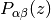, across a planar bilayer.
It is assumed that the bilayer normal lies along the
 -axis.
-axis.The equilibrium properties of are evaluated from its ensemble average, over a set of realizations (samples), at different time steps. These realizations should be provided as an input data file, tens_file, with the following format:
height 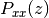 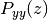 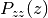 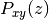 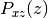 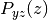 # Commented or labeled lines must start with `#` 
%f %f %f %f %f %f 
%f %f %f %f %f %f . . . . . . . . . . . . . . . . . . . . . 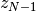 %f %f %f %f %f %f # Every sample terminates with two blank lines \n \n where the first column stores the homogeneous, spatial discretization of the simulation box along the bilayer normal, i.e., it consist of an array of
 slabs of width 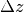, and where Greek sub-indexes,
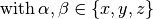, represent the
corresponding components of the pressure tensor. Furthermore, it is assumed
that, for each realization, the bilayer’s midplane lies exactly at the
middle of the simulation box, 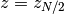.
slabs of width 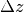, and where Greek sub-indexes,
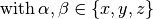, represent the
corresponding components of the pressure tensor. Furthermore, it is assumed
that, for each realization, the bilayer’s midplane lies exactly at the
middle of the simulation box, 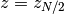.where the first column stores the spatial discretization along the bilayer normal, consisting of
slabs of width .The creation of TensProf objects requires passing tens_file as a unique argument:
tens_prof_object = TensProf('pressure_tensor_file.ext')
This returns an object containing the average pressure tensor and its local standard deviations, 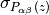, stored in tens and tens_err, respectively.
Parameters: - height ([float]) – Spatial discretization along the bilayer normal.
- tens ([[float]]) – Pressure tensor across the bilayer: .
- tens_err ([[float]]) – Standard deviation of of the pressure tensor: .
- samples (int) – Number of instantaneous pressure-tensor samples in the input file.
- slabs (int) – Number of slabs across the bilayer normal: .
- slab_width (float) – Width of the discretization slabs: .
- comps (int) – Number of independent components in the pressure tensor.
- __init__(tens_file)¶
Initialization is only possible if the input file exists and has the
expected format.
- _check_tens_file(tens_file)¶
Verifies the existence and proper format of the input file.
Returns the validated name of the input file in case it exist and has the expected format. On the contrary, the program is terminated with an error message.
Parameters: tens_file (string) – Input file with the instantaneous realizations of the pressure tensor. Returns: tens_file Return type: string
- _get_1st_sample(tens_stream)¶
Get the 1st instantaneous realization of the pressure tensor.
Sets the number of slabs in the pressure tensor and the discretization along the bilayer normal (slab_width). Also provides a 1st approximation of the local mean, which allows the evaluation of local variances in a single file-read, without round-off errors due to the floating-point arithmetic of large numbers. The local sum of linear and squared deviations from the approximated mean are also initialized.
Finally, the input stream to the input data file is re-winded before termination.
Parameters: - tens_stream (text_stream) – Stream to the input data file.
- mean ([float]) – Guess of the local mean values.
- sum_lin ([float]) – Zeroed sum of linear deviations from the guessed mean.
- sum_sqr ([float]) – Zeroed sum of squared deviations from the guessed mean.
- blanks (int) – Consecutive blank lines in the input stream. Two blanks separate individual profile realizations.
- comps (int) – Number of independent components in the pressure tensor.
Returns: mean, sum_lin, sum_sqr
Return type: [float], [float], [float]
- _get_profile()¶
Evaluates the average pressure tensor and its statistical error.
Having the sum of linear and square pressure tensor components ( sum_lin and sum_sqr, respectively) as well as an estimation of its local mean values (mean), the average components of the pressure tensor (tens) and its unbiased standard deviation (tens_err) are computed.
Parameters: - mean ([float]) – Guess of the local pressure profile mean.
- sum_lin ([float]) – Sum of linear deviations from the guessed mean.
- sum_sqr ([float]) – Sum of squared deviations from the guessed mean.
- _get_samples()¶
Read instantaneous realizations of the pressure tensor from input file.
Set the number of samples to be analyzed. Also sets the local sums linear and squared deviations from a tentative mean (obtained from the 1st profile sample), which are needed for the evaluation of the local averages and standard deviations.
Parameters: - mean ([float]) – Guess of the local mean values.
- sum_lin ([float]) – Sum of linear deviations from the guessed mean.
- sum_sqr ([float]) – Sum of squared deviations from the guessed mean.
- tens_stream (text_stream) – Stream to the input data file.
- blanks (int) – Consecutive blank lines in the input stream. Two blanks separate individual profile realizations.
- slab (int) – Location index across the bilayer discretization.
- comps (int) – Number of independent components in the pressure tensor.
Returns: mean, sum_lin, sum_sqr
Return type: [float], [float], [float]